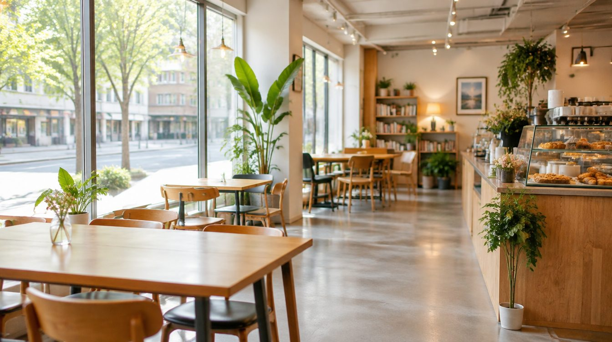
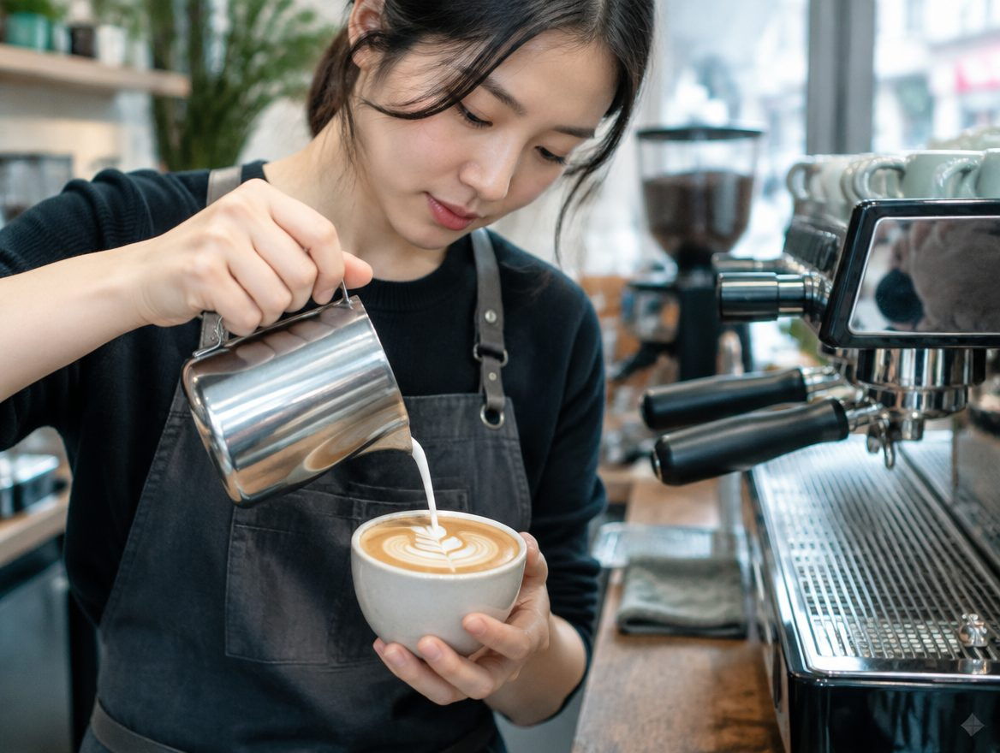

BRIGHT
산뜻함 · 가벼운 질감
원산지 이름보다 먼저, 좋아하는 맛을 떠올려 보세요 산뜻함과 고소함 사이에서 나에게 맞는 방향을 찾습니다
나의 커피 취향 찾기↗
선택은 제품 추천이 아닌 취향 탐색 UI 시연입니다
산뜻함 · 가벼운 질감
균형감 · 편안한 여운
고소함 · 묵직한 질감

평소 마시는 방식과 선호하는 질감을 이야기해 보세요 매장의 원두와 추출 가능 메뉴를 기준으로 선택을 돕는 구역입니다